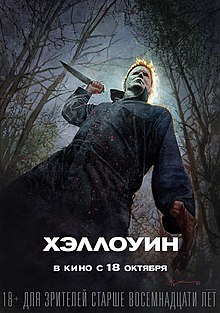
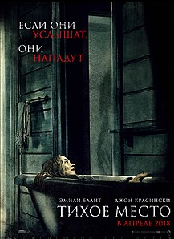

- Хеллоуин

Сюжет
Действие происходит на Хэллоуин 2018 года, спустя ровно 40 лет после Хэллоуина 78-го года. Майкл Майерс после той ночи был схвачен и снова
помещён в лечебницу в Смитс-Гроув. Присутствовавший при его аресте Фрэнк Хокинз помешал Сэму Лумису, психиатру, приставленному к Майклу, убить
последнего — Лумис был твёрдо уверен, что Майкл настоящее «зло в человеческом обличии». После смерти Лумиса психиатром Майкла был назначен ученик
Лумиса, доктор Ранбир Сартан. Лори Строуд, единственная выжившая в ту ночь жертва Майкла, за это время родила дочь Карен, но все годы её преследовал
страх, что настанет день, когда Майкл вырвется на свободу, чтобы довершить начатое. В итоге это превратилось в навязчивую идею, из-за чего Лори
сначала развелась с мужем, а затем была лишена родительских прав на Карен — всё детство Карен прошло в постоянной муштре, где мать учила её обращаться
с оружием. Карен, ставшая психологом, теперь живёт с мужем Рэем и дочерью Эллисон, которой она запрещает видиться с бабушкой. Лори же поселилась в доме
посреди леса, где постоянно тренируются в стрельбе, готовясь к встрече с Майклом.
30 октября двое подкастеров-криминалистов, Аарон и Дана, приезжают в лечебницу, чтобы встретиться с Майклом Майерсом и узнать, что произошло
в ту кровавую ночь, потому что это последняя возможность увидеть Майкла — поскольку за все эти 40 лет Майкл не проронил ни слова, то в ночь на 31
октября его собираются перевезти в другую лечебницу, более строго режима. Аарон привозит с собой раздобытую в полицию маску Майкла, которую он носил
в 1978 году,рассчитывая, что это заставит Макла заговорить. Хотя Сартан говорит, что Майкл способен говорить, но просто не хочет этого делать, Майкл
никак не реагирует на маску. Тогда журналисты отправляются к Лори, но и там никакого ответа, который бы их удовлетворил, они не получают. Тем же
вечером Майкла в числе особых пациентов лечебницы перевозят в другую. Лори, узнав об этом, решает убить Майкла, но, наблюдая за ним из машины с
револьвером в руках, в итоге так и не совершает задуманного. Она приезжает в Хэддонфилд к дочери в тот момент, когда её внучка Элисон обсуждает
со своим парнем Кэмероном планы на Хэллоуин. Лори не сдерживает слёз и начинает просить прощения у Карен, рассказав при этом, что она была возле
лечебницы и видела Майерса.
Той же ночью возвращающиеся с охоты отец и сын натыкаются на дороге на разбитый автобус из лечебницы и группу людей в белых больничных
пижамах. Отец выходит из машины, чтобы узнать о случившемся, а сын в этот момент пытается связаться с полицией, но не зная местоположения, берёт ружьё
и выходит из автомобиля, чтобы найти отца. Он находит на обочине раненого полицейского, который говорит ему, чтобы он уходил отсюда. Но мальчик идёт
дальше, к автобусу, где неожиданно появляется сопровождавший пациентов доктор Сартан. От испуга мальчик стреляет прямо в плечо доктору и в панике
возвращается в машину, где его уже ждёт Майкл. Он убивает мальчика, разбив ему голову об дверь.
Наступает 31 октября. Аарон и Дана останавливаются возле автосервиса и обнаруживают трёх убитых Майклом человек, с одного из которых
он снял рабочий комбинезон, а затем сам Майкл убивает пару и забирает из их машины свою маску. Наступает вечер Хэллоуина, Майкл Майерс появляется
в Хэддонфилде и устраивает кровавую резню. В общем счёте Майкл убивает 15 человек. Одной из жертв становится доктор Сартан, которому удалось сбить
Майкла и убить помощника офицера Хоукинса, который уже готов был убить маньяка (Сартан же хотел поместить Майкла обратно в лечебницу), но затем Майкл
убивает Сартана. Лори уговаривает дочь и зятя спрятаться в её доме, где есть секретный подвал. Через какое-то время туда приезжает полицейская машина.
Рэй подходит к ней, подозрительно открывает дверь и видит тело полицейского и обезглавленную голову его напарника. Майерс подходит к Рэю со спины и
убивает его. В схватке с Лори он ранит её ножом в живот, и та падает с балкона прямо на землю. Майкл отправляется к потайному входу, который ведёт в
подвал, где находятся Карен и Эллисон.
Майкл ломает механизм двери. Карен ждёт, когда появится Майкл. В руках у неё ружьё. И когда он появляется, она выстреливает ему прямо
в голову. Из-за спины появляется Лори и выталкивает Майкла в подвал. Он падает вниз по лестнице. Карен и Эллисон поднимаются на вверх. Однако Майкл
встаёт, и успевает схватить Карен за ногу. Начинается борьба. Эллисон замечает кухонный нож на полу, и делает несколько проникающих ударов по руке
Майерса. Карен выбирается. Лори запирает Майкла с помощью выдвижных лезвий, после чего включает газ и выбрасывает горящую шашку. Дом начинает
возгораться. Лори, Карен и Эллисон выбираются от туда живыми.
Их подбирает проезжавший мимо грузовик. В руке Эллисон остаётся нож, испачканный в крови Майерса.
В конце титров слышно дыхание Майкла.
- Тихое место

Сюжет
Действие фильма происходит в 2020 году в постапокалиптическом мире, в котором люди почти истреблены кровожадными паукообразными
монстрами. Эти монстры совершенно слепы, но обладают обострённым слухом, благодаря которому, услышав жертву, быстро настигают и убивают её.
Семейная пара фермеров, Эвелин и Ли Эбботт, пытаются всеми силами выжить в новой обстановке, когда нельзя издавать никаких
звуков: они ходят босиком, дома наступают только на нескрипучие половицы, а в общении между собой чаще всего используют язык жестов. В
семье трое детей: дочь Риган, которая глуха от рождения, сыновья Маркус и Бо. Детям не всегда легко понять, что важно не шуметь. Однажды
во время похода в полуразрушенный город, где семья запасается едой и всем необходимым, Бо хочет взять с собой игрушку на батарейках,
космический корабль. Отец запрещает ему брать игрушку, которая может издавать громкие звуки, однако затем Риган даёт корабль Бо, который
незаметно для неё вставляет в него батарейки, вынутые отцом. Во время пути домой через лес, возле моста игрушка в руках Бо начинает издавать
звуки, которые тут же привлекают монстра, убивающего и утаскивающего мальчика.
Проходит чуть больше года. Эвелин беременна и вскоре должна родить. Риган по-прежнему винит себя в смерти брата и считает, что
отец холоден к ней. Между тем Ли оборудует в доме подвал со звукоизоляцией, где можно будет разговаривать и где монстры не услышат крики малыша.
Он также постоянно совершенствует кохлеарный имплантат, который поможет Риган обрести слух, однако пока у неё не получается слышать. Однажды
Ли уходит с Маркусом на рыбалку, а Эвелин остаётся с Риган. Риган хочет уйти из дома и, собрав вещи, направляется к могиле Бо на мосту. Тем
временем Эвелин занимается стиркой и, возращаясь домой, чувствует, что у неё отошли воды и начались схватки. Спускаясь в подвал, она наступает
на гвоздь и роняет рамку с фотографией. Звук удара привлекает монстра, который забирается в дом.
Ли и Маркус рыбачат, и отец учит сына не бояться говорить, когда рядом есть другие, более громкие звуки, например, водопад.
На обратном пути они встречают старика, у которого монстры убили жену. Старик от отчаяния кричит, чем привлекает монстра, убивающего его.
Это задерживает Ли и Маркуса, которые возвращаются домой только в темноте, видя, что Эвелин зажгла возле дома красные лампочки, означающие
тревогу. Ли посылает Маркуса запустить салют, чтобы отвлечь монстра. Сам же Ли пробирается в дом, где находит чудом избежавшую смерти Эвелин
и новорождённого мальчика. Увидев салют, Риган бежит обратно к дому, по дороге в кукурузном поле натыкаясь на Маркуса. Однако вокруг ходят
монстры, и дети забираются на силосную башню, где Ли обычно зажигает сигнальный огонь, чтобы узнать, есть ещё в округе выжившие. Но больше
огней не видно. Маркус падает внутрь башни и чуть не тонет в зерне. Риган прыгает за ним, чтобы спасти его, и вскоре туда же пробирается монстр.
При приближении монстра Риган чувствует, что в её слуховом аппарате усиливается звук, так что она едва выдерживает его. Внезапно монстр убегает.
Тем временем Ли отправляется на поиски детей. Эвелин же некоторое время проводит во сне, но вдруг понимает, что подвал затапливает
водой из трубы, по-видимому повреждённой монстром, и кроме того один из монстров находится рядом в подвале. Она с трудом выбирается из подвала,
когда монстр убегает на звуки из силосной башни. Выбравшись из зерна и из башни, дети бегут к дому, встречая по дороге Ли, но на них набрасывается
монстр. Дети забираются в машину, а раненый Ли кричит, отвлекая на себя монстра, и гибнет. Дети добираются до дома и вместе с Эвелин и малышом
скрываются в мастерской Ли. Когда монстр, слыша плач малыша, заходит туда, Риган понимает, что на монстров отрицательно влияет звук, усиливающийся
её слуховым аппаратом. Она подносит свой аппарат к микрофону и монстр, не в силах выносить звук, падает, а затем Эвелин убивает его из ружья.
На экранах наружного наблюдения видно, что к дому спешат ещё несколько монстров, и Эвелин и Риган готовятся разделаться и с ними.